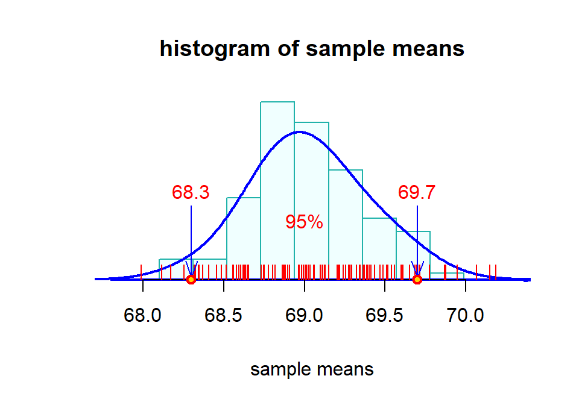
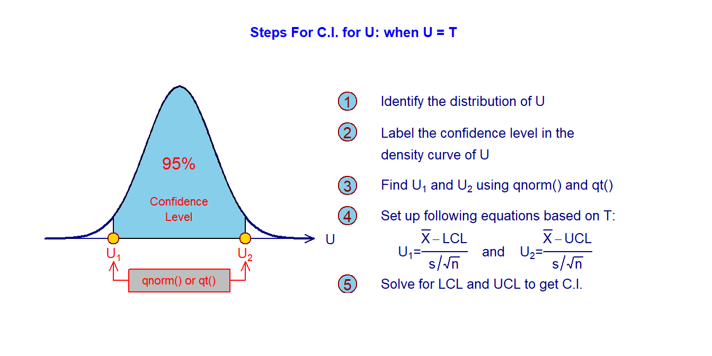

Topic 7 Confidence Intervals
Objectives: We want to estimate the population parameters such as mean, standard deviation, and proportion from a random sample and build a confidence interval (also called interval estimate) to show how good the estimate is, finally, we should be able to interpret the estimate.
7.1 Some Terms
The sample is random. That is, the values in the sample are representative of the whole population.
An estimate is a specific value or range of values obtained from a random sample that is used to approximate a population parameter.
A point estimate is a single value (obtained from the random sample) that is used to approximate a population parameter.
Example 1: The sample mean \(\bar{X}\) is the best point estimate of the population mean \(\mu\).
Example 2: The sample variance \(s^2\) is the best point estimate of the population variance \(\sigma^2\).
The bias of the point estimate is equal to the difference between the estimate and the true parameter. For example, the bias of the sample mean is \(\bar{x} -\mu\). The bias of an estimate measures the accuracy of the estimate.
Since the point estimate of a parameter is obtained from an underlying random sample, it is a random variable. The variance of the point estimate measures the precision of the point estimate of the corresponding population parameter.
The goodness of an estimate – no bias (accurate) and small variance (precise).
7.1.1 What are the issues of a point estimate?
With a point estimate, we can only say that it is close to the true population parameter. The question is how close is called “close”?
Example 1: The distribution of heights of WCU students is approximately normal with mean \(\mu\) inches and standard deviation \(\sigma\) inches. To estimate \(\mu\), we select a random sample \(\{x_1, \cdots ,x_n\}\)
Then \[ \bar{x} = \frac{x_1 + x_2 + \cdots + x_n}{n} \]
is close to the unknown true average height of WCU students. For example, assuming the true mean is 69 inches, a sample of 50 heights yields a sample average of 68.5 inches.
Is 68.5 close to 69?
Apparently, we cannot answer the above question with a single sample mean without any additional information.
7.1.2 How About Multiple Samples?
If I invite 100 students to help collect 100 random samples of the same size 50 from the WCU student population. Then we will have the following 100 sample means, say
68.2 68.3 68.3 68.4 68.4 68.5 68.6 68.6 68.6 68.6 68.6 68.7 68.7 68.7 68.7 68.7
68.7 68.7 68.8 68.8 68.8 68.8 68.8 68.8 68.8 68.8 68.8 68.8 68.8 68.8 68.8 68.8
68.9 68.9 68.9 68.9 68.9 68.9 68.9 68.9 68.9 68.9 68.9 68.9 69.0 69.0 69.0 69.0
69.0 69.0 69.0 69.0 69.0 69.0 69.0 69.1 69.1 69.1 69.1 69.1 69.1 69.1 69.1 69.1
69.1 69.1 69.1 69.2 69.2 69.2 69.2 69.2 69.2 69.2 69.2 69.2 69.2 69.3 69.3 69.3
69.3 69.3 69.3 69.4 69.4 69.4 69.5 69.5 69.5 69.5 69.5 69.5 69.6 69.6 69.6 69.6
69.7 69.7 69.7 69.9Each of the above means is supposed to be close to 69. Can we now answer the question about how close is called “close”? Let’s make a histogram of all sample means in the following.

We can see from the above histogram that most of the means are around (“close” to) 69. In fact, 95% of the sample means are within the interval [68.3, 69.7]. If we consider sample means within the interval to be “close” to the true mean, the above interval [68.3, 69.7] reveals the following information.
The interval has a 95% chance to include the true mean - accuracy and confidence;
The width of the confidence interval reflects the precision.
Therefore, this interval contains all desired information, but What is more important is that the interval was obtained from the distribution of sample means. In other words, only the sampling distribution of sample mean can provide such intervals that provide both accuracy and precision of the interval for a given confidence level!
7.2 How to find the Confidence Intervals for Means and Proportions?
The above section explained the concept of the confidence interval of the population mean intuitively with an example. This section provides a slightly formal approach to confidence intervals for population means and proportions.
7.2.1 Framework Of Confidence Interval
The ways of constructing confidence intervals for different parameters may be slightly different from a procedural perspective, but they follow the same framework of using the distribution of a random variable that contains the parameter of interest and its point estimate.
Definition: a pivotal quantity is a random quantity of both parameters and sample statistics and its distribution is independent of the parameters.
The following are a few examples related to the distribution we learned in the previous weeks.
Example 1. Recall in result #1 of the previous note, that if a random sample is taken from a normal population with a known variance \(\sigma_0^2\), the sampling distribution of the sample mean \(bar{x}\) is given by
\[ \bar{x} \to N(\mu, \sigma_0^2/n). \]
\(\bar{x}\) is not a pivotal quantity since its distribution \(N(\mu, \sigma_0^2/n)\) is dependent on the unknown parameter \(\mu\). However,
\[ Z_1 = \frac{\bar{x} - \mu}{\sigma_0/\sqrt{n}} \to N(0,1). \]
Since \(Z_1\) has a standard normal distribution that is independent of parameters and statistics, \(Z_1\) is a pivotal quantity.
Example 2. If a random sample is taken from a normal population with unknown variance. Let \(s\) be the sample standard deviation. From Result #2, we have
\[ T = \frac{\bar{x}-\mu}{s/\sqrt{n}} \to t_{n-1} \]
\(T\) is also a pivotal quantity since its distribution is independent of the population parameters.
Example 3. If a random sample is taken from an unspecified population with an unknown variance. Let \(s\) be the sample standard deviation. If the sample size is large, by the C.L.T,
\[ \bar{x} \to N(\mu, \sigma^2/n) \]
The standardized form is independent of unknown parameters
\[ Z_2 = \frac{\bar{X}-\mu}{s/\sqrt{n}} \to N(0,1). \]
Therefore, \(Z_2\) is a pivotal quantity.
Example 4 Let \(\{ x_1, x_2, \cdots, x_n\}\) be a random sample taken from a binary population \(Y\) with \(P(X=1) = p\). If \(np > 5\) and \(n(1-p) >5\), according to result #4, \(\hat{p} \to N(p, \sqrt{p(1-p)/n})\). The following standardized \(Z_3\) has a distribution
\[ Z_3 = \frac{\hat{p}-p}{\sqrt{\frac{p(1-p)}{n}}} \to N(0,1). \]
\(Z_3\) is also a pivotal quantity.
From the above four examples, we can see that the pivotal quantity associated with a sample mean or sample proportion is either the standard normal distribution or a t-distribution. Both distributions are symmetric with respect to the vertical axis.
For ease of illustration, we use \(U\) to denote either one of the above four quantities (\(Z_1, Z_2, Z_3\), and \(T\)). Now, for a given confidence level of \(95\%\) (or other confidence levels), we can find two cut-off \(U\) values, denoted by \(U_1\) and \(U_2\) such that \(P(U_1 < U < U_2) = 95\%\).

The above figure gives the steps for constructing the confidence interval for population means and proportions.
Confidence Level - The area of the shaded region in the above figure is called the confidence level. Note that 95% of the U values will be in [\(U_1\), \(U_2\)] is equivalent to sat the 95% of sample means based on the same size will be in [LCL, UCL].
Critical Value - \(U_2\) on the right-hand side of the density curve of the pivotal quantity is called the critical value. R functions qnorm() and qt() can be used to find the normal critical and t-critical values respectively.
7.3 Confidence Interval of Population Mean
This section introduces confidence intervals based on two sampling distributions: normal and t-distributions under different assumptions. We will use examples to illustrate how to construct confidence intervals with given confidence intervals.
From the histogram of the mean heights of WCU students, we can see that a 95% confidence interval of the population mean under normal sampling distribution is 2.5% and 97.5% quantiles. Therefore, R function qnorm() will be used to construct the confidence intervals of means and proportions.
7.3.1 Normal Population with Known Variance.
According to result #1 in the previous module, we have \[ \bar{X} \to N(\mu, \sigma_0^2/n) \Longleftrightarrow \frac{\bar{X} -\mu}{\sigma_0/\sqrt{n}} \to N(0, 1). \] If the confidence interval \(1-\alpha = 95\%\), then \(U_1 = U_{0.025} = qnorm(0.025)\) and \(U_2 = U_{0.975} = qnorm(0.975)\).
\[ P\left( U_1<\frac{\bar{X} -\mu}{\sigma_0/\sqrt{n}} <U_2 \right) = 0.95 \Longleftrightarrow \\ P\left(\bar{x}+U_1\frac{\sigma_0}{\sqrt{n}} <\mu< \bar{x}+U_2\frac{\sigma_0}{\sqrt{n}}\right) = 0.95 \] The \(95\%\) confidence interval of \(\mu\) is given by \[ \left(\bar{x}+U_1\frac{\sigma_0}{\sqrt{n}}, \bar{x}+U_2\frac{\sigma_0}{\sqrt{n}}\right)=\left[qnorm(0.025, mean =\bar{x}, sd = \sigma_0), qnorm(0.975, mean =\bar{x}, sd = \sigma_0) \right]. \]
The left-hand side equation is the confidence interval and the right-hand side of the equation is the confidence interval expressed in R functions qnorm().
Example 1. Suppose a researcher, interested in obtaining an estimate of the average level of some enzyme in a certain human population, takes a sample of 10 individuals, determines the level of the enzyme in each, and computes a sample mean of \(\bar{x}=22\). Suppose further it is known that the variable of interest is approximately normally distributed with a variance \(\sigma_0^2=45\) We wish to construct a confidence interval of the population mean \(\mu\) at a confidence level of 95%.
Solution Let \(\bar{x}\) be the sample mean calculated based on a random sample with size \(n = 10\). Since the population is approximately distributed with a known variance \(\sigma_0^2 = 45\), according to result #1 in the last note, we have the sampling distribution of the sample mean in the following form \[ \bar{x} \to N(\mu, \frac{45}{10}). \]
When we use pnorm() to find the quantiles, we replace the unknown mean \(\mu\) with the \(\bar{x}\). The following code is used to find the confidence interval.
## [1] 17.84229 26.15771Conclusion. We are 95% confident that the interval [17.84, 26.16] includes the true mean level of some enzyme in a certain human population.
Example 2. Some studies of Alzheimer’s disease (AD) have shown an increase in CO2 production in patients with the disease. In one such study, the following CO2 values were obtained from 16 neocortical biopsy samples from AD patients.
1009 1280 1180 1255 1547 2352 1956 1080 1776 1767 1680 2050 1452 2857 3100 1621Assume that the population of such values is normally distributed with a standard deviation of 350.
Solution Based on the condition, we have \(\bar{x} \to N(\mu, 350/\sqrt{16})\). The unknown population will be estimated by the sample mean \(\bar{x}\) in the following R code.
normal.sample = c(1009, 1280, 1180, 1255, 1547, 2352, 1956, 1080, 1776, 1767,
1680, 2050, 1452, 2857, 3100, 1621)
sample.avg = mean(normal.sample) # sample mean
## 95% confidence intervals
qnorm(c(0.025, 0.975), mean = sample.avg, sd = 350/sqrt(16))## [1] 1576.128 1919.122Conclusion. We are 95% confident that the interval [1576.1, 1919.1] includes the true mean level of CO2 in neocortical biopsy samples from AD patients with size 16.
7.3.2 Normal Population with Unknown Variance
Recall in Results #2, the standardized pivotal quantity \(U = T_{n-1}\), t-distribution with \(n-1\) degrees of freedom.
\[\frac{\bar{x}-\mu}{s/\sqrt{n}} \to t_{n-1}.\]
Using the same logic, we have the following \(95%\) confidence intervals based on the t-distribution.
\[ \left(\bar{x}+qt(0.025, df=n-1)\frac{s}{\sqrt{n}}, \bar{x}+qt(0.975, df=n-1)\frac{s}{\sqrt{n}}\right) \]
Unfortunately, there is no direct sampling distribution of \(\bar{x}\), so we have to use the above formula to find the t-confidence interval if we are given the sample mean (\(\bar{x}\)) and sample standard deviation (\(s\)). However, if we were given a data set, the R function t.test() can be used to generate the above confidence interval.
Example 3 In a study of the effects of early Alzheimer’s disease on non-declarative memory, the Category Fluency Test was used to establish baseline persistence semantic memory, and language abilities. The eight subjects in the sample had Category Fluency Test scores of 11, 10, 6, 3, 11, 10, 9, and 11. Assume that the eight subjects constitute a simple random sample from a normally distributed population of similar subjects with early Alzheimer’s disease.
What is the point estimate of the population mean?
What is the standard deviation of the sample?
What is the estimated standard error of the sample mean?
Construct a 95 percent confidence interval for the population mean category fluency test score.
Solution The following R code gives the answers to the above questions.
test.score= c(11, 10, 6, 3, 11, 10, 9, 11)
n = length(test.score) # sample size
Q.a = mean(test.score)
Q.b = round(sd(test.score),3)
Q.c = round(sd(test.score)/sqrt(n),3)
Q.d = round(t.test(test.score, conf.level = 0.95)$conf.int,3)
kable(as.data.frame(cbind(Q.a = Q.a,
Q.b = Q.b,
Q.c = Q.c,
Q.d = paste("[",Q.d[1], ", ", Q.d[2], "]"))))| Q.a | Q.b | Q.c | Q.d |
|---|---|---|---|
| 8.875 | 2.9 | 1.025 | [ 6.45 , 11.3 ] |
The answers to questions a, b, and c are given in the above table. The 95% confidence interval for the fluency test score is [6.45, 11.3] meaning that interval [6.45, 11.3] has a 95% chance to include the true mean test score.
Example 4: A sample of 16 ten-year-old girls had a mean weight of 71.5 and a standard deviation of 12 pounds, respectively. Assuming normality, find a 99 percent confidence interval for \(\mu\).
Solution Based on the given assumption, the pivotal quantity has a t-distribution with 15 degrees of freedom. We cannot use t.test() to find the confidence interval since it requires the raw data set. We can then use the given formula to find the confidence interval.
xbar = 71.5
s = 12
LCL = xbar + qt(0.005, df = 15)*s/sqrt(16)
UCL = xbar + qt(0.995, df = 15)*s/sqrt(16)
CI = cbind(LCL = LCL, UCL = UCL)
CI = round(CI,2)
kable(CI)| LCL | UCL |
|---|---|
| 62.66 | 80.34 |
The 95% confidence interval of the mean weight is [62.66, 80.34]. Therefore, we are 99% confident that the mean weight is in [62.66, 80.34].
7.3.3 Unspecified Population with Unknown Variance but with Large Sample Sizes
When the sample size is large, we then use the central limit theorem (CLT). The pivotal quantity is approximately normally distributed. The confidence interval can be similarly found using the sample code as used in Example 1.
Example 5 A physical therapist wished to estimate, with 99 percent confidence, the mean maximal strength of a particular muscle in a certain group of individuals. A sample of 64 subjects who participated in the experiment yielded a mean of 84.3 and a sample variance of 144.
Solution Since sample size \(n = 64\), according to the CLT, we have \[ \bar{x} \to N(84.3, 144/64) \]
We can use the above sampling distribution to find the 99% confidence interval given in the following code.
LCL = qnorm(0.005, mean = 84.3, sd = sqrt(144/64))
UCL = qnorm(0.995, mean = 84.3, sd = sqrt(144/64))
CI = cbind(LCL, UCL)
CI = round(CI,2)
kable(CI)| LCL | UCL |
|---|---|
| 80.44 | 88.16 |
The 99% confidence interval is [80.44, 88.16]. Therefore, we are 99% confident that the mean maximal strength of a particular muscle in a certain group of individuals is between 80.44 and 88.16.
7.4 Confidence Interval of Proportion
According to Result 4 in the previous section, we can find a 95% confidence interval of the population proportion based on the following sampling distribution of \(\hat{p}\)
\[ \hat{p} \to N(p, \sqrt{\hat{p}(1-\hat{p})/n}) \]
Example 6 To study patients who were mechanically ventilated in the intensive care unit of six hospitals in Buenos Aires, Argentina. The researchers found that of 472 mechanically ventilated patients, 63 had clinical evidence of ventilator-associated pneumonia (VAP). Construct a 95 percent confidence interval for the proportion of all mechanically ventilated patients at these hospitals who may be expected to develop VAP and interpret the confidence interval.
Solution Since \(n\hat{p} = 472 \times (63/472) = 63 > 5\) and \(n(1-\hat{p}) = 409 > 5\), according to Result 4, \(\hat{p} \to N(p, \sqrt{\hat{p}(1-\hat{p})/472})\). The following R code generates the 95% confidence interval of the proportion.
n = 472
phat = 63/472
s.phat = sqrt((63/472)*(1-63/472)/472)
LCL = qnorm(0.025, mean =phat, sd = s.phat)
UCL = qnorm(0.975, mean =phat, sd = s.phat)
CI=cbind(LCL, UCL)
CI = round(CI,2)
kable(CI)| LCL | UCL |
|---|---|
| 0.1 | 0.16 |
The 95% confidence interval of the proportion of all mechanically ventilated patients at these hospitals who may be expected to develop VAP is [0.1, 0.16]. Therefore, [0.10, 0.16] has a 95% chance to include the true proportion.
7.5 Two Sample Problems - Comparing Two Population Means
We only introduce two sample problems based on independent samples with large sample sizes. One important fact is that the variances of two independent variables are additive. To be more specific, let \(X\) and \(Y\) be independent random variables, then \(Var(X \pm Y) = Var(X) + Var(Y)\). However, standard deviations are NOT additive, \(sd(X \pm Y) = sd(X) + sd(Y)\).
In real-world applications, one of the practical questions is to compare the difference between two population means (\(\mu_1 - \mu_2\)). One way to address this issue is to construct a confidence interval for \(\mu_1 - \mu_2\).
7.5.1 Confidence Interval of the Difference of Two Unspecified Populations Means
Let \(\bar{x}_1\) and \(\bar{x}_2\) be sample means of two independent populations. The corresponding sample standard deviations are \(s_1\) and \(s_2\), and \(n_1 > 30\) and \(n_2 >30\) are sample sizes. The sampling distribution of \(\bar{x}_1 - \bar{x}_2\) is given by
\[ \bar{x}_1 - \bar{x}_2 \to N\left(\mu_1 - \mu_2, \sqrt{\frac{s_1^2}{n_1} + \frac{s_2^2}{n_2}} \right) \]
Using the above sampling distribution, we can construct a 95% confidence interval of the difference between two population means.
Example 7 Despite common knowledge of the adverse effects of doing so, many women continue to smoke while pregnant. To examine the effectiveness of a smoking cessation program for pregnant women. The mean number of cigarettes smoked daily at the close of the program by the 328 women who completed the program was 4.3 with a standard deviation of 5.22. Among 64 women who did not complete the program, the mean number of cigarettes smoked per day at the close of the program was 13 with a standard deviation of 8.97. We wish to construct a 99 percent confidence interval for the difference between the means of the populations from which the samples may be presumed to have been selected.
Solution Since \(n_1 = 328 > 30\) and \(n_2 = 64 > 30\), then \[ \bar{x}_1 - \bar{x}_2 \to N\left(\mu_1 - \mu_2, \sqrt{\frac{5.22^2}{328} + \frac{8.97^2}{64}}\right) \] The 95% confidence interval is given by
n1 = 328
n2 = 64
x1bar = 4.3
x2bar = 13
s1 = 5.22
s2 = 8.97
LCL = qnorm(0.005, mean = x1bar -x2bar, sd = sqrt(s1^2/n1 + s2^2/n2))
UCL = qnorm(0.995, mean = x1bar -x2bar, sd = sqrt(s1^2/n1 + s2^2/n2))
CI=cbind(LCL, UCL)
CI=round(CI,2)
kable(CI)| LCL | UCL |
|---|---|
| -11.68 | -5.72 |
Therefore, we are 99% confident that the difference between the two population means \(\mu_1-\mu_2\) is in [-11.68, -5.72]. Since both confidence limits are negative, we can claim that \(\mu_1-\mu_2 < 0\), that is, \(\mu_2 > \mu_1\).
7.5.2 Confidence Interval of the Difference of Two Normal Populations Means
We only discuss a special case in which
both populations are normal.
population variances are unknown but equal.
Because the two population variances are equal, we combine two samples to estimate the common variance using the following formula.
\[ s_{pool} = \sqrt{\frac{(n_1-1)s_1^2 + (n_2-1)s_2^2}{n_1 + n_2} } \]
With the above pooled standard deviation, we have
\[ \frac{(\bar{x}_1 - \bar{x}_2)-(\mu_{1} - \mu_{2}) }{s_{pool}\sqrt{1/n_1 + 1/n_2}} \to t_{n_1 + n_2 -2} \]
Let \(U_1 = qt(0.025, df =n_1+n_2 -2)\) and \(U_2 = qt(0.975, df =n_1+n_2 -2)\), then the 95% confidence interval of \(\mu_1 - \mu_2\) is given by
\[ \left[(\bar{x}_1 - \bar{x}_2)+U_1\frac{s_{pool}}{\sqrt{1/n_1 + 1/n_2}}, (\bar{x}_1 - \bar{x}_2)+U_2\frac{s_{pool}}{\sqrt{1/n_1 + 1/n_2}}\right] \]
Example 8 To determine the effectiveness of an integrated outpatient dual-diagnosis treatment program for mentally ill subjects. The authors were addressing the problem of substance abuse issues among people with severe mental disorders. A retrospective chart review was performed on 50 consecutive patient referrals to the Substance Abuse/Mental Illness program at the VA San Diego Healthcare System. One of the outcome variables examined was the number of inpatient treatment days for a psychiatric disorder during the year following the end of the program. Among 18 subjects with schizophrenia, the mean number of treatment days was 4.7 with a standard deviation of 9.3. For 10 subjects with bipolar disorder, the mean number of psychiatric disorder treatment days was 8.8 with a standard deviation of 11.5. We wish to construct a 95 percent confidence interval for the difference between the means of the populations represented by these two samples. We assume that both populations are normal and have equal variances.
Solution Based on the given information, we pivotal quantity is given by
\[ \frac{(\bar{x}_1 - \bar{x}_2)-(\mu_1-\mu_2)}{\sqrt{s_1^2/n_1 + s_2^2/n_2}} \to t_{n_1+n_1 - 2} \]
Therefore, the t-confidence interval of the difference of the two population means is given by the following code.
n1 = 18
n2=10
x1bar = 4.7
x2bar = 8.8
s1 = 9.3
s2=11.5
s.pool = sqrt(((n1-1)*s1^2 + (n2-1)*s2^2)/(n1+n2-2))
LCL = (x1bar-x2bar)+qt(0.025, df = n1+n2-2)*s.pool*sqrt(1/n1 + 1/n2)
UCL = (x1bar-x2bar)+qt(0.975, df = n1+n2-2)*s.pool*sqrt(1/n1 + 1/n2)
CI=cbind(LCL, UCL)
CI = round(CI, 2)
kable(CI)| LCL | UCL |
|---|---|
| -12.3 | 4.1 |
Therefore, the 95% confidence interval of \(\mu_1-\mu_2\) is [-12.3, 4.1]. Since the 95% confidence interval does contain 0. We are 95% confident that there is no significant difference between the two population means.
Conclusion Remarks
We can discuss the difference between two independent proportions using the same logic in the previous sections.
In the next module, we will discuss testing hypotheses - another type of inference.
7.6 Assignment - Confidence Intervals
Please study the examples in the class note and complete the following problems. Please note that you are expected to interpret each of the confidence intervals you obtained. You can modify my code to calculate confidence intervals.
Problem 1
We wish to estimate the mean serum indirect bilirubin level of 4-day-old infants. The mean for a sample of 16 infants was found to be 5.98 mg/100 cc. Assume that bilirubin levels in 4-day-old infants are approximately normally distributed with a standard deviation of 3.5 mg/100 cc. Construct a 95% confidence interval of the mean serum indirect bilirubin level of 4-day-old infants (\(\mu\)) and interpret the interval.
Problem 2
10 obstetrics and gynecology interns participated in a study conducted by researchers at the University of Colorado Health Sciences Center. The researchers wanted to assess competence in performing clinical breast examinations. One of the baseline measurements was the number of such examinations performed. The following data give the number of breast examinations performed for this sample of 10 interns.Construct a 95% confidence interval for the number of breast examinations and give an interpretation of the confidence interval.
Problem 3
The punctuality of patients in keeping appointments is of interest to a research team. In a study of patient flow through the offices of general practitioners, it was found that a sample of 35 patients was 17.2 minutes late for appointments, on average. Previous research had shown the standard deviation to be about 8 minutes. The population distribution was felt to be non-normal. Find the 90 percent confidence interval for \(\mu\), the true mean amount of time late for appointments and interpret the confidence interval.
Problem 4
The following are the activity values (micromoles per minute per gram of tissue) of a certain enzyme measured in normal gastric tissue of 35 patients with gastric carcinoma.
0.360, 1.189, 0.614, 0.788, 0.273, 2.464, 0.571, 1.827, 0.537, 0.374, 0.449, 0.262,
0.448, 0.971, 0.372, 0.898, 0.411, 0.348, 1.925, 0.550, 0.622, 0.610, 0.319, 0.406,
0.413, 0.767, 0.385, 0.674, 0.521, 0.603, 0.533, 0.662, 1.177, 0.307, 1.499We wish to construct a 95 percent confidence interval for the population mean and interpret the confidence interval. It is not necessary to assume that the sampled population of values is normally distributed.
Problem 5
In a study, 136 subjects with syncope or near syncope were studied. Syncope is the temporary loss of consciousness due to a sudden decline in blood flow to the brain. Of these subjects, 75 also reported having cardiovascular disease. Construct a 99 percent confidence interval for the population proportion of subjects with syncope or near syncope who also have cardiovascular disease and interpret the interval.
Problem 6
In a study of factors thought to be responsible for the adverse effects of smoking on human reproduction, cadmium level determinations (nanograms per gram) were made on the placenta tissue of a sample of 14 mothers who were smokers and an independent random sample of 18 nonsmoking mothers. The results were as follows:
Nonsmokers: 10.0, 8.4, 12.8, 25.0, 11.8, 9.8, 12.5, 15.4, 23.5, 9.4, 25.1, 19.5, 25.5, 9.8, 7.5, 11.8, 12.2, 15.0
Smokers: 30.0, 30.1, 15.0, 24.1, 30.5, 17.8, 16.8, 14.8, 13.4, 28.5, 17.5, 14.4, 12.5, 20.4
Assume that both smokers and non-smoker populations are normally distributed and have equal variance.
Does it appear likely that the mean cadmium level is higher among smokers than nonsmokers? Why Do you reach this conclusion? [Hint: answer the above questions by constructing a 95% confidence interval of the difference between population means.]